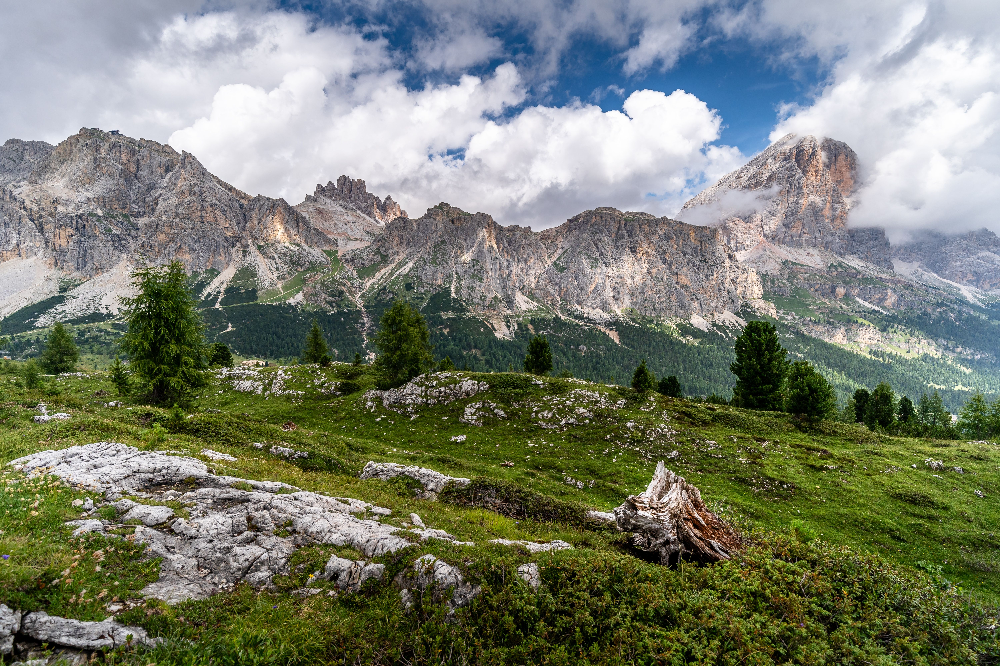

Cammina. Respira. Scopri.
Sentieri è un piccolo sito per chi ama l'escursionismo: itinerari, consigli e ispirazione per le tue prossime giornate in montagna.
Vedi gli itinerari
Chi siamo
Siamo un gruppo di appassionati di montagna con il desiderio di condividere la bellezza del nostro territorio. Dalle piacevoli passeggiate in famiglia adatte a tutte le età, fino alle salite più impegnative e panoramiche, raccontiamo le nostre uscite per ispirare le tue prossime avventure all'aria aperta.
Ogni itinerario presente sul sito è descritto nei minimi dettagli: troverai informazioni chiare su livello di difficoltà, tempi di percorrenza, dislivello, punti d'interesse e consigli pratici per preparare al meglio la tua escursione in totale sicurezza.